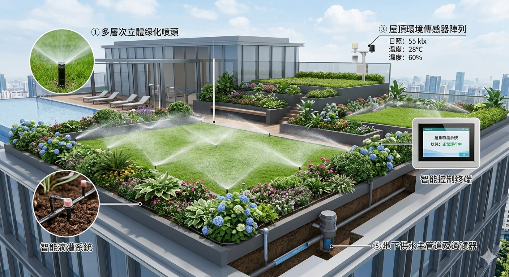

01 / CONTROL⌁
IRRIGATION EQUIPMENT · ENGINEERING SOLUTIONS
專業灌溉設備供應
與工程整合服務
從國際品牌設備選型，到自動噴灌配置、CAD 圖面與水力計算，
以完整系統思維，協助每一個場域建立可靠的灌溉方案。
SYSTEM DESIGN / PRODUCT SUPPLY / TECHNICAL SUPPORT
01 ／ HONY KON
WHAT WE DO
設備供應與工程服務，
以系統需求為核心。
灌溉系統不只是設備的組合，更需要考量水源條件、流量、壓力、管路配置與現場環境。滙凱從產品供應到工程技術支援，協助客戶把需求轉化為可執行的系統方案。
PRODUCT PORTFOLIO
灌溉設備產品中心
依照場域、流量、壓力與控制需求，
選擇合適的設備與系統零組件。
02 / SPRINKLER◉
03 / VALVE◎
04 / DRIP••••
05 / PIPING◌
PRODUCT INQUIRYHK+
實際供應品項、型號與規格依原廠資料及個別專案確認；未列出之產品亦歡迎洽詢。
GLOBAL IRRIGATION BRANDS
國際品牌設備，
搭配合適的系統選型。
HUNTER
TORO
ENGINEERING SERVICES
從圖面規劃到水力計算，
讓系統設計更有依據。
考量實際場地與供水條件，
讓設備、管路及控制系統有效整合。
 ENGINEERING WITH SITE CONDITIONS IN MIND
ENGINEERING WITH SITE CONDITIONS IN MIND自動噴灌配置與 CAD 圖面
依植栽範圍、地形及噴頭特性規劃配置，檢視覆蓋範圍與分區。
流量、壓力與水力計算
彙整各區需求流量，評估管路壓損、末端壓力及系統操作條件。
管徑與泵浦系統選用
依設計流速與水力需求，協助評估管徑、泵浦及供水配置。
控制器、電磁閥與系統整合
整合控制分區、閥件與現場設備，建立清楚可靠的控制架構。
PROJECT APPLICATIONS
多元場域的灌溉應用
依照場域特性、植物需求與維護條件，
規劃適合的灌溉方式。
LANDSCAPE / RESIDENTIAL
景觀庭園與建築中庭
草坪、植栽及建築周邊綠地的自動灌溉規劃。

GREENHOUSE / AGRICULTURE
溫室、網室與農業灌溉
依作物與場域條件，配置滴灌、微噴及控制系統。
本區呈現既有網站之應用圖片與服務範疇；個別工程名稱、地點及施工範圍以可公開之實際專案資料為準。
ABOUT HONY KON
不只提供設備，
更重視整套系統的合理性。
滙凱實業有限公司專注於灌溉設備供應與工程技術整合。從產品規格、流量與壓力條件，到配置與現場應用，我們以實際需求為出發點，協助客戶與工程夥伴找到合適的解決方式。
與我們討論需求 →CONTACT & INQUIRY
告訴我們您的需求。
產品採購、規格確認或工程規劃，歡迎提供資訊與圖面，讓我們進一步了解您的需求。
公司名稱滙凱實業有限公司HONY KON INTERNATIONAL CO., LTD.
公司地址台北市大安區忠孝東路四段162號4樓409室
服務電話+886-2-2776-0766
傳真+886-2-2741-5731
官方 LINE IDhonykon